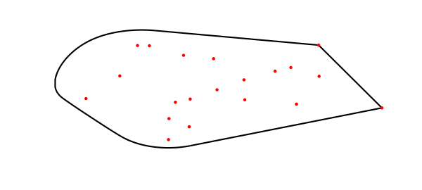
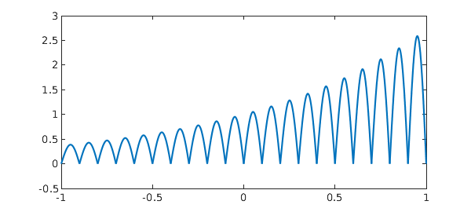
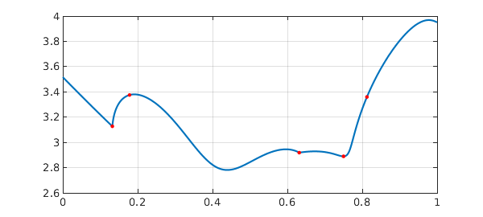
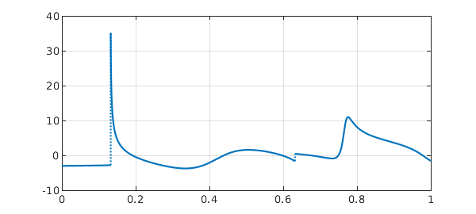
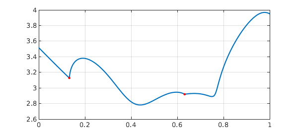

Chebfun's edge detection capability was introduced many years ago by Rodrigo Platte [1]. This is the most general method by which Chebfun introduces breakpoints to represent a piecewise smooth function in 1D, and it is surprisingly fast and accurate.
For example, the Chebfun command fov enables one to compute the field of values of a matrix, i.e., the set of all its Rayleigh quotients in the complex plane. This is a convex set, but its boundary need not be smooth. Here is an example involving a matrix of dimension 20. The dots are the eigenvalues, and the black line is the boundary of the field of values. In this case two eigenvalues lie on the boundary, and Chebfun has found them with edge detection.
rng(1) d = sort(randn(20,1)) + 1i*randn(20,1); A = diag(d); A(1:10,1:10) = A(1:10,1:10) + diag(ones(9,1),1); [W,W2] = fov(A); LW = 'linewidth'; MS = 'markersize' plot(W,'k',LW,1.6), hold on, plot(W2,'k',LW,1.6) hold on, plot(d,'.r',MS,14), hold off, axis off
MS = markersize

That example is a bit highbrow, so let us try a simpler one. Here's one that is very simple. Suppose we make Chebfun from the function $|e^x \sin(10\pi x)|$, using 'splitting on' mode:
f = chebfun('abs(exp(x).*sin(10*pi*x))','splitting','on');
plot(f)

Of course we know mathematically that the points of discontinuity are $-1,-0.9,\dots, 1$, but Chebfun doesn't know this a priori; it figures it out with edge detection to make a piecewise Chebfun. Here we see that the edges detected are correct in all the digits printed.
format long domain(f)'
ans = -1.000000000000000 -0.900000000000000 -0.800000000000000 -0.700000000000000 -0.600000000000000 -0.500000000000000 -0.400000000000000 -0.300000000000000 -0.200000000000000 -0.100000000000000 0.000000000000000 0.100000000000000 0.200000000000000 0.300000000000000 0.400000000000000 0.500000000000000 0.600000000000000 0.700000000000000 0.800000000000000 0.900000000000000 1.000000000000000
The actual errors in the breakpoints are on the order of machine epsilon:
true_edges = (-1:.1:1); maxerr = norm(domain(f)-true_edges,inf)
maxerr =
4.440892098500626e-16
Now in this example we didn't really need the edge detector; indeed we could construct the chebfun by telling it where to put the breakpoints.
f2 = chebfun('abs(exp(x).*sin(10*pi*x))',true_edges,'splitting','on');
norm(f-f2)
ans =
4.691314575986808e-15
For a more genuine illustration of edge detection in action we want a function whose edge locations are not simple to work out mathematically. Such an example is provided by the spectral abscissa (largest eigenvalue real part) of a matrix $A = (1-t)B + tC$, where $B$ and $C$ are fixed matrices and $t$ is a parameter. We mark the breakpoints with red dots.
rng(0) B = randn(20); C = randn(20); A = @(t) (1-t)*B + t*C; abscissa = @(t) max(real(eig(A(t)))); f = chebfun(@(t) abscissa(t),[0,1],'splitting','on','vectorize'); plot(f), grid on breakpts = domain(f); breakpts = breakpts(2:end-1)' hold on, plot(breakpts,f(breakpts),'.r',MS,12), hold off
breakpts = 0.132388194915147 0.178339670550754 0.631775989556641 0.750000000000000 0.875000000000000

There are five breakpoints, but only two of them correspond to actual singularities, as we see from a plot of the derivative:
plot(diff(f)), grid on

The other breakpoints are introduced because in splitting on mode, Chebfun does not try very hard to give each piece a representation of maximal length. However, we can change this by increasing the 'splitLength' parameter from its default value of 160. Here they are if we change splitLength to 1000.
f2 = chebfun(@(t) abscissa(t),[0,1],'splitting','on',... 'splitLength',1000,'vectorize'); plot(f2), grid on breakpts2 = domain(f2); breakpts2 = breakpts2(2:end-1)' hold on, plot(breakpts2,f2(breakpts2),'.r',MS,12), hold off
breakpts2 = 0.132388194915147 0.631775989556641

For details of Chebfun's edge detection algorithm, see [1], and for another example involving spline functions, see http://www.chebfun.org/examples/approx/Splines.m.
References
- R. Pachon, R. B. Platte, and L. N. Trefethen, Piecewise-smooth chebfuns, IMA Journal of Numerical Analysis, 30 (2010), 898-916.